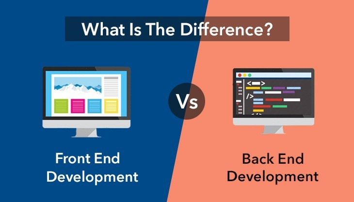

Um sistema web é uma aplicação que opera através da internet, sendo acessada por um navegador. Ele é composto por duas partes principais:
Front-end (Cliente): A interface com a qual o usuário interage diretamente. Usando tecnologias como HTML, CSS e JavaScript, o front-end cria a estrutura, o design e a interatividade das páginas web.
Back-end (Servidor): Onde a lógica e os dados da aplicação são processados. O back-end é responsável por lidar com solicitações do usuário, acessar bancos de dados e retornar respostas. Tecnologias comuns incluem linguagens de programação (como Node.js, Python e Java) e bancos de dados (como MySQL e MongoDB).
A comunicação entre o cliente e o servidor acontece via HTTP e APIs como REST. Sistemas podem ser monolíticos (tudo em um único bloco) ou microserviços (divididos em partes independentes).

BENEFÍCIOS DOS PROJETOS DE SISTEMAS WEB
Os projetos de sistemas web oferecem diversos benefícios, incluindo:
Acessibilidade Remota: Usuários podem acessar o sistema de qualquer lugar, a qualquer hora, apenas com uma conexão à internet.
Facilidade de Atualização: As atualizações podem ser feitas no servidor, sem a necessidade de alterar dispositivos individuais dos usuários.
Baixo Custo de Implementação: Não exige instalação em máquinas locais, o que reduz custos com hardware e software.
Escalabilidade: Sistemas web podem ser escalados com facilidade para atender a um número crescente de usuários ou dados.
Integração com Outros Sistemas: Facilita a integração com outros sistemas e serviços online, como APIs e bancos de dados externos.
Segurança: É possível implementar medidas de segurança avançadas no servidor, como criptografia e controle de acesso, sem depender de cada máquina cliente.
Multiplataforma: Pode ser acessado por diferentes dispositivos (computadores, smartphones, tablets), sem a necessidade de versões específicas para cada um.
Esses benefícios tornam os sistemas web uma escolha eficiente e prática para muitas empresas e usuários.
TRANSFORMAÇÃO DIGITAL E COMPETITIVIDADE
A transformação digital e a competitividade estão fortemente ligadas aos sistemas web, pois essas tecnologias ajudam as empresas a se adaptarem rapidamente ao mercado, otimizando processos e melhorando a experiência do cliente.
Aqui estão os principais pontos dessa relação:
Inovação e Agilidade: Sistemas web permitem inovações rápidas, como lançamento de novos produtos e serviços, além de facilitarem a adaptação às mudanças do mercado.
Acesso a Novos Mercados: Com sistemas web, as empresas podem alcançar clientes globais, ampliando seu alcance e expandindo sua competitividade.
Eficiência Operacional: A automação de processos e a integração de diferentes áreas da empresa melhoram a eficiência, reduzindo custos e aumentando a produtividade.
Análise de Dados e Personalização: O uso de dados em tempo real permite decisões mais informadas, além da personalização de ofertas, o que fortalece a fidelização do cliente.
Melhoria da Experiência do Cliente: Sistemas web proporcionam uma experiência mais ágil e personalizada, resultando em maior satisfação e fidelização dos clientes.
Portanto, a transformação digital, impulsionada por sistemas web, é essencial para as empresas se manterem competitivas, oferecendo mais agilidade, inovação e um melhor atendimento ao cliente.
FASES DE UM PROJETO DE SISTEMA WEB
As fases de um projeto de sistema web podem ser resumidas da seguinte forma:
Planejamento: Definição de objetivos, escopo, requisitos e recursos necessários. Análise do público-alvo e levantamento das funcionalidades essenciais.
Análise e Design: Criação da arquitetura do sistema, definição de fluxo de dados, protótipos de interface (wireframes) e escolha das tecnologias a serem utilizadas.
Desenvolvimento: Codificação do sistema, incluindo backend (servidor, banco de dados) e frontend (interface de usuário). Implementação das funcionalidades e integração com outras plataformas, se necessário.
Testes: Avaliação da qualidade do sistema por meio de testes de usabilidade, performance, segurança e correção de bugs. Garantia de que o sistema atenda aos requisitos.
Implantação: Colocação do sistema em ambiente de produção, tornando-o disponível para os usuários finais. Acompanhamento de performance e possíveis ajustes iniciais.
Manutenção: Atualizações, correções e melhorias contínuas no sistema, conforme surgem novas necessidades ou problemas, garantindo que o sistema permaneça eficiente e seguro ao longo do tempo.
Essas fases ajudam a garantir o sucesso do projeto, desde o planejamento até a manutenção contínua do sistema web.
BOAS PRÁTICAS EM DESENVOLVIMENTO WEB
Boas práticas em desenvolvimento web são fundamentais para criar sistemas eficientes, seguros e escaláveis. Aqui estão algumas das principais:
Usabilidade e Acessibilidade: Garantir que o site seja fácil de usar e acessível a todos, incluindo pessoas com deficiência (ex.: uso de contrastes adequados, navegação por teclado, etc.).
Responsividade: Desenvolver o sistema para que ele funcione bem em diferentes dispositivos e tamanhos de tela (computadores, smartphones, tablets).
Desempenho: Otimizar o tempo de carregamento, como compactação de imagens, uso de cache, minimização de arquivos CSS/JS e a escolha de servidores eficientes.
Segurança: Implementar práticas como criptografia (SSL/TLS), autenticação forte, proteção contra injeção de SQL e XSS (Cross-Site Scripting), além de manter o sistema e dependências atualizados.
Código Limpo e Organizado: Manter o código legível, modular e bem comentado, facilitando manutenção e escalabilidade.
SEO (Search Engine Optimization): Criar uma estrutura de código e conteúdo que favoreça a indexação nos motores de busca, aumentando a visibilidade do site.
Testes: Implementar testes unitários, de integração e de usabilidade para garantir a qualidade do sistema e detectar problemas antes da implantação.
Controle de Versão: Usar ferramentas como Git para gerenciar o código-fonte, facilitando o trabalho em equipe e o controle de alterações.
Essas práticas são essenciais para o sucesso e longevidade de sistemas web, garantindo que sejam funcionais, seguros e fáceis de usar.